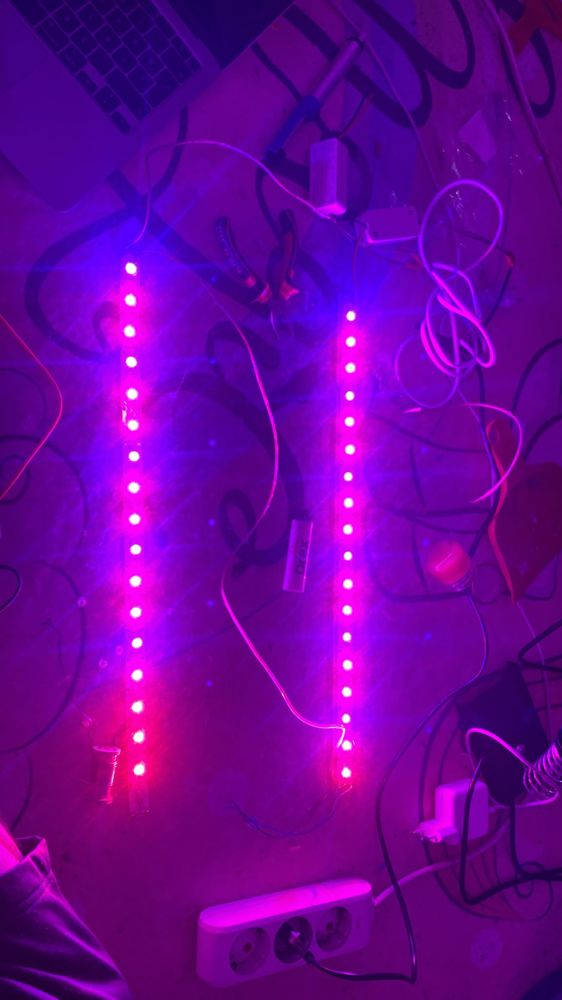

20 Eylül 2026. Sürgünler toprağın üstüne çıkınca ışığı açma zamanı geldi. Tek çubukla hesapladığım ışık miktarı hedefin altında kaldığı için armatürü ikiye çıkardım. Bu sayfada hem son düzeni hem de bu sırada bir sürücü yakıp nasıl teşhis ettiğimi yazıyorum.

Son düzen
| Parça | Değer |
|---|---|
| LED | Powerlux 1 W, 350 mA yıldız PCB. Deep Red 650–670 nm ve Royal Blue 430–450 nm, iki kırmızı bir mavi sırasıyla |
| Çubuk | 120 cm alüminyum çubuk ortadan kesildi, iki adet 60 cm çubuk |
| LED sayısı | Çubuk başına 17, toplam 34. Bir yuva boş kaldığı için telle köprülendi |
| Sürücü | Powerlux DJT-BS1925A. Giriş AC 110–256 V, çıkış DC 57–83 V, sabit akım 320 mA |
| Dizi gerilimi | Çubuk başına ölçülen yaklaşık 42 V, ikisi seri yaklaşık 84 V |
| Soğutma | Her çubuğun arkasında 30 × 2 mm düz alüminyum profil, HY-21 termal macunla |
Neden seri, neden bu sayılar
Sabit akım sürücüsü akımı sabit tutar, gerilimi yüke göre kendi ayarlar. Bu yüzden LED'ler seri bağlanır: aynı akım hepsinden geçer ve parlaklık eşit olur. Paralel bağlamak iyi bir fikir değil, çünkü akım kollara eşit bölünmez; gerilimi biraz düşük olan kol akımın çoğunu çeker ve önce o ısınır.
Seri dizide toplam gerilim, LED'lerin ileri gerilimlerinin toplamıdır. Bende kırmızı yaklaşık 2,1 V, mavi yaklaşık 3,1 V ölçüldü. Sürücünün çıkış aralığı da bu toplamı kapsamalı. Tek çubukta 18 LED yaklaşık 44 V ediyordu, yani sürücünün 57 V'luk alt sınırının altında kalıyordu. Buna rağmen LED'ler düzgün yanıyordu, ama iki çubuğu seri bağlayınca toplam 84 V'a çıktı ve sürücünün 83 V'luk tavanına dayandı. Çalışıyor; sönme ya da titreme görürsem bir LED daha çıkarıp yerini köprüleyeceğim.
Seri dizinin kritik tarafı şu: tek bir kopukluk bütün çubuğu söndürür. Bozuk bir LED'i söküp yerini boş bırakırsanız hiçbir LED yanmaz. Boş yuvanın iki pedini telle köprülemek zinciri kapatır, o konum ışık vermez ama devre çalışır.
Işık hesabı
PPFD ölçerim olmadığı için hesapla gidiyorum. 320 mA'de kırmızı LED yaklaşık 0,69 W, mavi 0,99 W elektrik çeker. Ucuz güç LED'lerinde elektrik enerjisinin ışığa dönüşme oranı %30–40 arasındadır. 660 nm'de 1 W ışık 5,5 µmol/s, 440 nm'de 3,7 µmol/s foton verir.
Bu kabullerle 34 LED yaklaşık 38–51 µmol/s fotosentetik foton akısı üretir. Kutunun içi alüminyum bantla kaplı olduğu için fotonların %60–75'inin 0,15 m²'lik tekneye düştüğünü varsayarsam teknede ortalama 150–255 µmol m⁻² s⁻¹ eder. 11 saat ışıkta günlük ışık miktarı 6–10 mol m⁻² gün⁻¹ olur. Protokoldeki hedef 224–270 idi; tek çubukla bunun yarısındaydım, iki çubukla alt sınıra geldim.
Çubuklar tekneye paralel, aralarında yaklaşık 15 cm boşlukla asılacak ve yaprak uçlarının 15 cm üstünde duracak. Yapraklar uzadıkça yükseltilecek.
Bir sürücü yaktım: giriş ile çıkışı karıştırmak
Sürücünün iki kahverengi teli giriş, kırmızı ve siyah teli çıkıştır. Ben 220 V'u kırmızı ve siyaha, yani çıkışa verdim. Fişi takar takmaz şalter attı. Sürücünün çıkış katı içeriden kısa devre oldu ve sürücü kullanılamaz hâle geldi. Anlaşılması kolay: fiş çekiliyken çıkış uçları arasında süreklilik kademesi ötüyorsa o sürücü gitmiştir.
Alınacak ders basit. Etiketi okumadan hiçbir teli bağlamamak, giriş ve çıkış taraflarını bağlamadan önce işaretlemek, 220 V tarafında lehim yerine klemens kullanmak ve bütün ekleri makaronla kapatmak.
Yanmayan çubukta arıza bulma sırası
Bütün testler fiş prizden çekiliyken yapılır. Multimetre diyot kademesi LED'leri, süreklilik kademesi bağlantıları kontrol eder.
- Sürücü sağlam mı: Çıkış uçları arasında süreklilik ötüyorsa sürücü bozuktur. Sağlam sürücüde ötme olmaz.
- LED'ler sağlam mı: Diyot kademesinde her LED'in + ve − pedine dokunun. Kırmızılar hafifçe yanar ve 1500–2600 arası bir değer gösterir. Maviler için multimetrenin test gerilimi çoğu zaman yetmez, bu yüzden "1" görmek tek başına arıza anlamına gelmez; maviyi 3 V'luk düğme pille test etmek daha güvenilir. İki yönde de aynı değeri veren LED bozuktur.
- Ters LED var mı: Kırmızı probu her zaman kartta + yazan pede koyun. Bu yönde yanmayıp ters yönde yanan LED ters lehimlenmiştir ve tek başına bütün diziyi söndürür.
- Kopuk bağlantı var mı: Süreklilik kademesinde her LED'in − pedi ile bir sonrakinin + pedi arasında ötme olmalı. Ötmeyen yerde soğuk lehim vardır; gözle sağlam görünür ama iletmez.
- Boş yuva var mı: Sökülüp yeri boş bırakılmış bir LED zinciri açar. Yerine LED takın ya da iki pedi köprüleyin.
- Kısa devre var mı: Çubuğun + ve − uçları arasında ötme olmamalı. Ötüyorsa sürücü korumaya girer ve hiç ışık vermez.
İki çubuğu seri bağlarken
Her çubuğun ucunda sonlandırma köprüsü var; bu köprü son LED'in eksisini kartın dönüş hattından başa geri getiriyor, böylece her çubuğun + ve − uçları aynı baştan çıkıyor. İki çubuk arasına tek bir tel gider:
- Sürücü + → 1. çubuğun +
- 1. çubuğun − → 2. çubuğun + (ara tel)
- 2. çubuğun − → sürücü −
Bende ilk denemede 1. çubuk tam güç yandı, 2. çubuk hiç yanmadı. Sebep şuydu: sürücünün siyah ucu hâlâ 1. çubuğun − ucuna bağlıydı. Akım 1. çubuktan çıkıp doğrudan sürücüye dönüyor, 2. çubuğa hiç uğramıyordu. Seri devrede aynı akım bütün elemanlardan geçmek zorunda olduğu için "biri yanıyor, diğeri yanmıyor" tablosu her zaman böyle bir baypas anlamına gelir. Siyah ucu 2. çubuğun − tarafına almak sorunu çözdü.
Sırada
Armatür 11 saat, 20:00–07:00 arası yanacak. LED'in kutuya verdiği ısı yaklaşık 26 W; ESP32'nin 30 dakikada bir tuttuğu kayıtla ışık açıkken kutunun kaç derece ısındığını ölçeceğim. Bozuk çıkan LED'lerin yerine yedek sipariş edilecek.